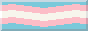
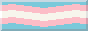

♥ Meeeeeee ♥
 Hii ♥ and welcome to my little corner of this "series of tubes"。
Hii ♥ and welcome to my little corner of this "series of tubes"。
I am Luna a weird thing that is currently 25 years old. I am intrested in Art and Photography and this is my little website.
The Reason this websites exists is to just create without hesitation. I want to be able to document and have a safe space on the interwebs.
Details
Creator: LunaAge: 25
Size: Reasonable
Hobbies: Being Gay, Photography, gaming, reading, painting and kissing girls !!!

I also like older or weird-ish movies. Such as
Dr.Strangelove or:
How I learned to Stop Worrying and
Love the Bomb
or
House
(not the medical show with the Dr.House altough that one I also watched and it's
pretty okai)
are some of my favourite movies.
Maybe it would be cool to yap about movies someday (when I find the energy to do so). But here is the link to my Trakt. Where it basically tracks all the stuff I watch (As of Sep.2025 currently watching The good Doctor). As you can see I really like Stats and stuff that's why I also use Last.FM. Last.fm is also a very cool service where you can see a lot of details and what genres and stuff you listen to (WARNING: I am very cringe and listen to very cringe music but that's okai :3).
I like a lot of different stuff. And since I am very normal I like certain things a reasonable amount. For example for the last year or so I have been pretty invested with performance art and would really also like to do my own performance art. I actually have already a rough Idea of what I want to do but it's still very much in planning. I will prob make a page about it when I first present it somewhere. The plan is also to continue to study further after I finish my studies in photography. Maybe Fine Art would be cool or something else (I haven't really decided yet...).
Maybe it would be cool to yap about movies someday (when I find the energy to do so). But here is the link to my Trakt. Where it basically tracks all the stuff I watch (As of Sep.2025 currently watching The good Doctor). As you can see I really like Stats and stuff that's why I also use Last.FM. Last.fm is also a very cool service where you can see a lot of details and what genres and stuff you listen to (WARNING: I am very cringe and listen to very cringe music but that's okai :3).
I like a lot of different stuff. And since I am very normal I like certain things a reasonable amount. For example for the last year or so I have been pretty invested with performance art and would really also like to do my own performance art. I actually have already a rough Idea of what I want to do but it's still very much in planning. I will prob make a page about it when I first present it somewhere. The plan is also to continue to study further after I finish my studies in photography. Maybe Fine Art would be cool or something else (I haven't really decided yet...).
Special Abilities
- Being Gay
- ADHD
- On the spectrum
- A lot of Anxiety
Site will always be under construction sowwy ♥♥♥


 
